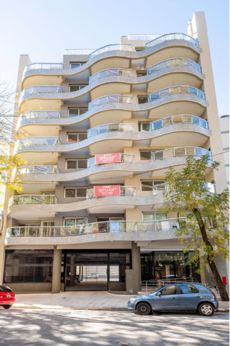
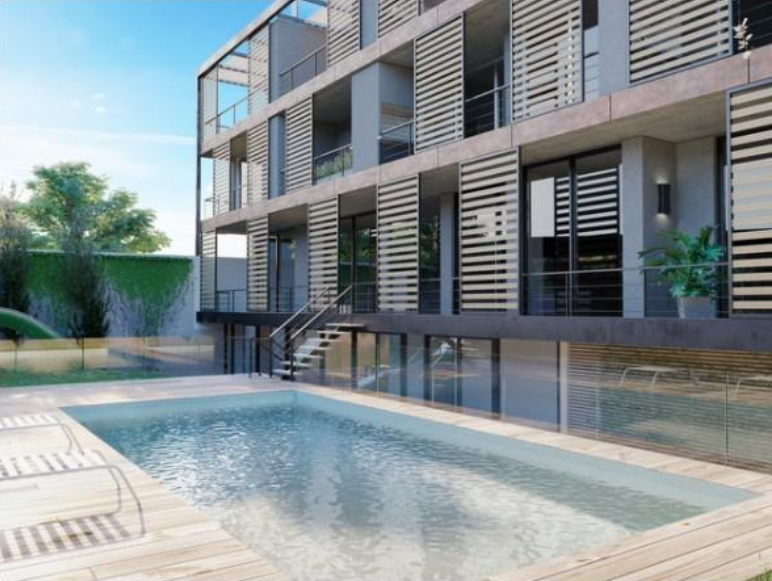
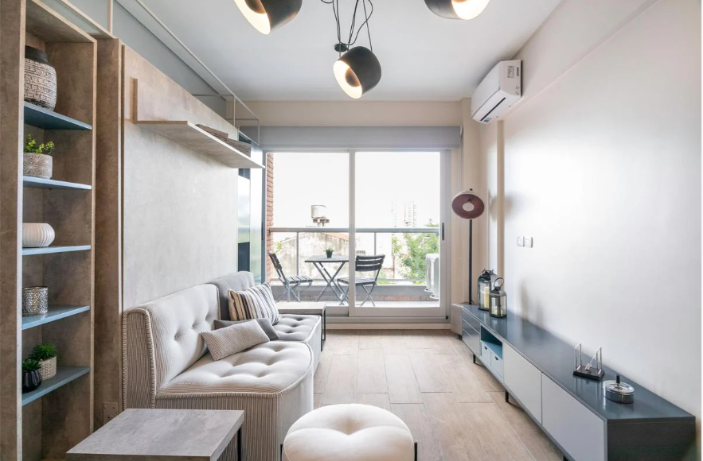

Propiedades destacadas
EDIFICIO PAVILLON COLPAYO Y YERBAL - ÚLTIMOS DISPONIBLES ¡Mudate a un Pavillon, Nos ocupamos de la venta de tu departamento con importantes descuentos para vos! Departamento de 2 ambientes al frente en Caballito a 350 mts. de Acoyte y Av. Rivadavia.l
LAS HERAS FLORIDA - Emprendimiento de 23 unidades residenciales de 45 a 135m2. Un proyecto para el estilo de vida contemporáneo, orientado a quienes buscan una residencia suburbana con la conveniencia que ofrece un edificio moderno. Las Heras Florida combina excelencia en diseño, innovación y alta calidad constructiva.
1 ambiente al contrafrente con balcón. Apto profesional. El departamento cuenta con hall de entrada, 1 ambiente con salida a balcón al contrafrente, cocina integrada con muebles bajo mesada, alacenas y mesada de granito, baño completo, placard con interiores totalmente terminados. Pre instalación para poner aire acondicionado. Puerta de acceso al departamento marca Pentágono. AMENITIES: Solarium con Duchadores Piso 11°, Salón de usos múltiples con parrilla Piso 10°, Toilette /Vestuario, Bicicletero en Planta Baja, Puesto para seguridad en Hall de Acceso, Laundry en el subsuelo.